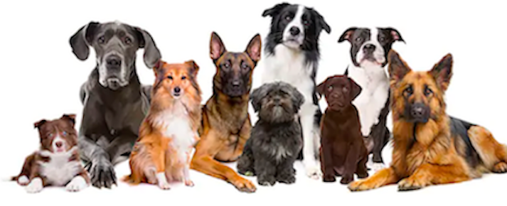
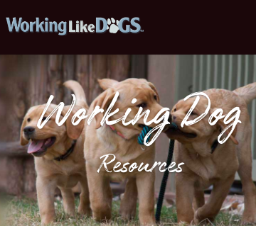

We all have Hall of Fame Dogs!!
About Us
 We honor dogs for the many contributions that they give to society. Dogs have helped their humans in many special ways.- Hero Dogs
- Working Dogs
- Companion Dogs
Want more information about special dogs and how to have your pup become a special dog check out links below.
Hero Dogs
Dogs have helped the miltary be sniffing out bombs and other threats. They have been a crucial help to policemen. The K-9 units are able to find and/or rescue survivors in disasters, locate drugs, explosives and much more.
Working Dogs
Dogs have been used to help with farming, herding, hauling and all kinds of things in the agricultural arena.
Companion Dogs
Lastly, dogs provide immeasureable assistance to individual owners. There are dogs that help autistic childern or people that have endured trama. There are dogs who can assist their owner with medical issues by sensing when a seizure is coming or being able to detect when a diabetic's blood sugar level is off balance. A dog can be trained to help a person with balance and mobility issues to remain stable.
A dog can be a tremendous emotional anchor to a human. Needless to say, a dog is an amazing companion.
Want more information about special dogs and how to have your pup become a special dog check out links below.
